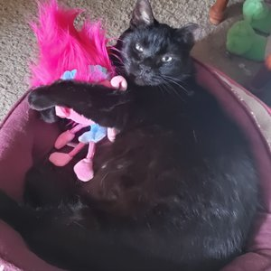

Background
I am a creator. I love to start with nothing and build it into something. For the longest time, this meant crafting things through knitting, crocheting, and sewing. Now this also includes being able to create web pages and apps using different markup and programming languages.
Outside of being creative, I'm also a payroll specialist, musician, movie lover, and gamer (both board and video). And I also am a very curious person, so learning new things is something I enjoy.
Goals
I want to master the process of building web sites and increase my knowledge, skills and abilities in:
- HTML
- CSS
- JavaScript
I'd like to work with a small, but talented team with a focus on working with small businesses, helping to give them a strong online presence as well as creating apps that can help them run their business.
Dixie
Dixie the Cat is my faithful companion through all of my learning and working. Dixie is loving known as Dixie the Mouse Slayer, the best mouse slayer in all the lands!